--- title: “1” date: 2025-02-14 21:17:00 tags: “1” hidden: false top: false # 是否置顶文章（如果主题支持） layout: post # 文章布局类型，默认为 post，也可以设置为 page 等
优先级最高的并不是真正意思上的运算符
| 优先级 | 运算符 | 名称或含义 | 使用形式 | 结合方向 | 说明 |
| 1 | [ ] | 数字下标 | 数组名[常量表达式] | 左到右 | |
| 2 | （ ） | 圆括号 | （表达式)/函数名（形参表） | 左到右 | |
| 3 | . | 成员选择(对象) | 对象.成员名 | 左到右 | |
| 4 | → | 成员选择(指针) | 对象指针→成员名 |
单目运算符
| 优先级 | 运算符 | 名称或含义 | 使用形式 | 结合方向 |
|---|---|---|---|---|
| 1 | - | 负号运算符 | -表达式 | 右到左 |
| 2 | （类型） | 强制类型转换 | （数据类型）表达式 | 右到左 |
| 3 | ++ | 自增运算符 | ++变量名/变量名++ | 右到左 |
| 4 | - - | 自减运算符 | –变量名/变量名– | 右到左 |
| 5 | * | 取值运算符 | *指针变量 | 右到左 |
| 6 | & | 取地址运算符 | &变量名 | 右到左 |
| 7 | ！ | 逻辑非运算符 | ！表达式 | 右到左 |
| 8 | ~ | 按位取反运算符 | ~表达式 | 右到左 |
| 9 | sizeof | 长度运算符 | sizeof(表达式) | 右到左 |
双目运算符
| 优先级 | 运算符 | 名称或含义 | 使用形式 | 结合方向 |
|---|---|---|---|---|
| 1 | / | |||
| 2 | * | |||
| 3 | % |
| 优先级问题 | 表达式 | 经常误认为的结果 | 实际结果 |
|---|---|---|---|
| .的优先级高于* | *p.f | p所指对象的字段f | 对p取f偏移，作为指针，然后进行解除引用操作，*（p.f） |
| （）高于[ ] | int (*ap)[n] | xxxx | ap是指向一个具有 n个int数组的指针 |
| [ ]高于 * | int *ap[ ] | ap是个指向int数组的指针，int(*ap)[ ] | ap是个元素为int指针的数组 int *(ap[ ]) |
| 函数( )高于* | int *fp( ) | fp是个函数指针，所指函数返回int。int(*fp)( ) | fp是个函数，返回int *， int * (fp()) |
| ==和!=高于位操作 | （val & mask !=0） | (val & mask) != 0 | val & (mask!=0) |
| ==和!=高于赋值符 | c = getchar( ) != EOF | (c = getchar())!=EOF | c = (getchar != EOF) |
| 算术运算符高于移位运算符 | msb<< 4 + lsb | (mab<<4) +lsb | msb<<(4+lsb) |
排序
快速排序
void Quick_Sort(int *arr, int begin, int end)//快速排序,升序
{
if(begin > end)//只有一个数，基准确定，递归的出口
return;
int tmp = arr[begin];
int i = begin;
int j = end;
while(i != j){
while(arr[j] >= tmp && j > i)
j--;
while(arr[i] <= tmp && j > i)
i++;
if(j > i){
int t = arr[i];
arr[i] = arr[j];
arr[j] = t;
}
}
arr[begin] = arr[i];
arr[i] = tmp;
Quick_Sort(arr, begin, i-1);//递归，对基准数的左边进行相同操作
Quick_Sort(arr, i+1, end);//递归，对基准数的右边进行相同操作 int cmp(const void*a,const void*b)
{
return *(int*)a>*(int*)b;//大于升序，小于反之
}
qsort(nums,numsSize,sizeof(int),cmp);二维数组的快速排序
原题：输入：score = [[10,6,9,1],[7,5,11,2],[4,8,3,15]], k = 2 输出：[[7,5,11,2],[10,6,9,1],[4,8,3,15]] 解释：在上图中，S 表示学生，E 表示考试。
- 下标为 1 的学生在第 2 场考试取得的分数为 11 ，这是考试的最高分，所以 TA 需要排在第一。
- 下标为 0 的学生在第 2 场考试取得的分数为 9 ，这是考试的第二高分，所以 TA 需要排在第二。
- 下标为 2 的学生在第 2 场考试取得的分数为 3 ，这是考试的最低分，所以 TA 需要排在第三。
int sortCol;
int cmp(const void *a, const void *b){
return (*(int**)b)[sortCol] - (*(int**)a)[sortCol];
}
int** sortTheStudents(int** score, int scoreSize, int* scoreColSize, int k, int* returnSize, int** returnColumnSizes){
sortCol = k;
qsort(score,scoreSize,sizeof(int*),cmp);
*returnSize = scoreSize;
*returnColumnSizes = scoreColSize;
return score;
}指针
双指针用法
注意：避免访问未初始化的指针
eg：
int *a;//未初始化的指针
int *a=&b;//初始化的指针数组的名字是数组第一个元素的地址
int a[5]={1,2,3,4,5};
printf("%d %d %d %d %d
",*a,*(a+1),*(a+2),*(a+3),*(a+4));
//result:1 2 3 4 5用指针直接定义一个字符串，用下标逐个获取每个元素
char *str="i love you!";
int i,len;
len=strlen(str);
for(i=0;i<len;i++)
{
printf("%c",str[i]);
//or printf("%c",*(str+i));
}
//redult: i love you!数组和指针的区别
数组名只是一个地址，不可修改。而指针变量是一个左值，是可修改的
指针数组
存放指针变量的数组
int a=1;
int b=2;
int c=3;
int d-4;
int e=5;
int p*[5]={&a,&b,&c,&d,&e};
char *p2[5]={"虽然说","人生","并没有","什么意义","但是爱情"};
printf("%s",p2[3]);//p2[3]指向字符串，*p2[3]指向字符数组指针
//指向整个数组的指针
//之前的指针指向的是数组某个元素的地址
int temp[5]={1,2,3,4,5};
int (*p)[5]=&temp;//*p是一个指针，需要给指针一个地址,这里的数组指针指向的是整个数组，所以给整个数组的地址&temp,而不是temp(第一个数组元素的地址==数组名)
int i;
for(i=0;i<5;i++)
{
printf("%d",*(*p+i));//*p指向&temp,&temp+i指向每个元素的地址，再对其取值运算得到每个元素的值
}
//一个大地址（整个数组）里嵌套了五个小地址（五个数组元素）二维数组和指针
int array[5][5]={0};
//理解：array是二维数组名，是指向包含五个元素的数组的指针
//*(array+1) == array[1]
//因为数组名是第一个元素的地址
//*(array+1) -> array[1] -> &(array[1][0]);
//**(array+1)=*(*(array+1)+0)-> array[1][0];
//*(*(array+2)+3) -> array[2][3];*(array+i) == array[i];
*(*(array+i)+j) == array[i][j];
*(*(*(array+i)+j)+k)==array[i][j][k];数组指针和二维数组
int array[2][3]={{0,1,2},{3,4,5}};
int (*p)[3]=array;
//此时p和array基本一致
*(array+i)==*(p+i) == array[i];
*(*(array+i)+j)==*(*(p+i)+j) == array[i][j];
*(*(*(array+i)+j)+k)== *(*(*(p+i)+j)+k)==array[i][j][k];void指针和NULL指针
//void指针，通用指针
int num=1;
int *p1=#
char *p2="你好";
void *p3;
p3=p2;
printf("%p
",p3);
p3=p1;
printf("%p",p3);回溯算法
递归和回溯相辅相成
(纯暴力，不高效)
组合问题
切割问题
子集问题
排列问题
棋盘问题
抽象为树形结构
void backtracking()
{
if(终止条件)
{
收集结果
return;
}
for(集合的元素集)//单层搜索逻辑
{
处理节点;
递归函数;
回溯操作；//撤销处理节点的情况
}
return;
}
int count;
int findTargetSumWays(int* nums, int numsSize, int target) {
count = 0;
backtrack(nums, numsSize, target, 0, 0);
return count;
}
//例子
void backtrack(int* nums, int numSize, int target, int index, int sum) {
if (index == numSize) {
if (sum == target) {
count++;
}
} else {
backtrack(nums, numSize, target, index + 1, sum + nums[index]);
backtrack(nums, numSize, target, index + 1, sum - nums[index]);
}
}滑动窗口

（属于双指针）
哈希表
高效的散列，俗称哈希(基于快速存取的角度设计的，典型的空间换时间的做法)
通过把关键码值key（编号）映射到表中一个位置（数组的下标）来访问记录，以加快访问的速度。这个映射函数就叫做散列函数，存放记录的数组叫做散列表
| 键KEY | 组员的编号，如1，5，19…… |
|---|---|
| 值VALUE | 组员的其他信息（包含姓名，年龄，战斗力等等） |
| 索引 | 数组的下标0，1，2，3，4（用以快速定位和检索数据） |
| 哈希桶 | 保存索引的数组（链表或者数组）数组成员为每一个索引值相同的多个元素 |
| 哈希函数 | 将文件编号映射到索引上，采用求余法。如：文件编号 19 |
1eg
#define DEFAULT_SIZE 16//索引数组的大小
typedef struct _ListNode//定义一个链表
{
struct _ListNode *next;//链表指向下一个元素
int key;//键值
void *data;//数据value
}ListNode;
typedef ListNode *List;//当做一个链表用
typedef ListNode *Element;//当作一个元素（两者概念不一样，但实际时同一个东西）
typedef struct _HashTable
{
int TableSize;
List *Thelists; //不知道哈希桶有多少个，动态分配
}HashTable;
/*根据key计算索引，定位哈希桶的位置*/
int Hash(int key,int TableSize)
{
return (key%TableSize);//求余定位
}
//哈希表初始化
HashiTable *InitHash(int TableSize)
{
int i=0;
HashTable *hTable = NULL;
if(TableSize<=0)
{
TableSize=DEFAULT_SIZE;
}
hTable=(HashTable*)malloc(sizeof(HashTable));
if(NULL==hTable)
{
printf("HashTable malloc error.
");
return NULL;
}
hTable->TableSize=TableSize;
//为哈希桶分配内存空间，其为一个指针数组
hTable->Thelists=(List*)malloc(sizeof(List)*TableSize);
if(NULL=hTable->Thelists)
{
}
}二分查找
有序升序数组查找target,没有则返回-1
int search(int* nums, int numsSize, int target){
int i=0,j=numsSize-1;
while(i<=j)
{
int temp=i+(j-i)/2;
if(nums[temp]==target)return temp;
else if(nums[temp]>target)
{
j=temp-1;
}
else if(nums[temp]<target)
{
i=temp+1;
}
}
return -1;
}二叉树
暴力直接建树
#include <stdio.h>
#include <stdlib.h>
typedef struct node
{
int data;//节点存储的数据
struct node* left;//节点指向下一个左边的节点
struct node* right;//节点指向下一个右边的节点
}Node; //将 struct node 简写成 Node;
void preorder(Node* node)
{//先序遍历,先走根再走左边再走右边(根->左->右)
if(node!=NULL)
{
printf("%d
",node->data);//这里不能用node.data,因为这里node是一个指针，node->data相当于（*node）.data;
preorder(node->left);//遍历node的左边
preorder(node->right);//遍历node的右边
}
}
void inorder(Node* node)
{//中序遍历,先走左边再走根再走右边(左->根->右)
if(node!=NULL)
{
inorder(node->left);//遍历node的左边
printf("%d
",node->data);//这里不能用node.data,因为这里node是一个指针，node->data相当于（*node）.data;
inorder(node->right);//遍历node的右边
}
}
void postorder(Node* node)
{//后序遍历,先走左边再走右边再走根(左->右->根)
if(node!=NULL)
{
postorder(node->left);//遍历node的左边
postorder(node->right);//遍历node的右边
printf("%d
",node->data);//这里不能用node.data,因为这里node是一个指针，node->data相当于（*node）.data;
}
}
int main()//主函数
{
Node n1,n2,n3,n4;//定义四个节点
n1.data=5;
n2.data=6;
n3.data=7;
n4.data=8;//赋值四个节点所存储的数据
n1.left=&n2;//n1的左下节点指向n2；
n1.right=&n3;//n1的右边连着n3；
n2.left=&n4;//n2的左边连着n4
n2.right=NULL;//安全点
n3.left=NULL;//安全点
n3.right=NULL;//安全点
n4.left=NULL;//安全点
n4.right=NULL;//安全点
preorder(&n1);//放根节点（不能直接放n1,n1是结构变量，应该放指针，也就是放该结构变量的地址）answer:5 6 8 7
inorder(&n1);//放根节点（不能直接放n1,n1是结构变量，应该放指针，也就是放该结构变量的地址）answer:8 6 5 7
postorder(&n1);//放根节点（不能直接放n1,n1是结构变量，应该放指针，也就是放该结构变量的地址）answer:8 6 7 5
}Binary Search Tree:二叉搜索树（BST）：降低搜索复杂度
特点：每一个根节点一定比左节点大，比右节点小
#include <stdio.h>
#include <stdlib.h>
typedef struct node
{
int data;//节点存储的数据
struct node* left;//节点指向下一个左边的节点
struct node* right;//节点指向下一个右边的节点
}Node; //将 struct node 简写成 Node;
typedef struct
{
Node *root;//要访问树的话只要访问到这棵树的根节点就行
}Tree;
void insert(Tree *tree,int value)//往一棵树里面插入一个数字value
{//将value包装成一个节点
Node *node=malloc(sizeof(Node));//动态分配，当这段子函数退出时，这个node不会被程序销毁掉
node->data=value//在该节点内存入value值
node->left=NULL//新节点，左右都没有东西
node->left=NULL//新节点，左右都没有东西
if(tree->root==NULL)//如果树本身就是空的话
{
tree->root=node;
}
else //如果树不是空的
{
Node *temp=tree->root;//定义一个临时节点等于树根和value作比较，
}
}链表
实例：链表的中间节点
输入：head = [1,2,3,4,5]
输出：[3,4,5]
解释：链表只有一个中间结点，值为 3 。struct ListNode* middleNode(struct ListNode* head){
struct ListNode*p=head,*q=head;
while(p!=NULL&&p->next!=NULL)
{
p=p->next->next;
q=q->next;
}
return q;
}实例：合并两个有序链表
输入：l1 = [1,2,4], l2 = [1,3,4]
输出：[1,1,2,3,4,4]/**
* Definition for singly-linked list.
* struct ListNode {
* int val;
* struct ListNode *next;
* };
*/
struct ListNode* mergeTwoLists(struct ListNode* list1, struct ListNode* list2){
struct ListNode* list3=(struct ListNode*)malloc(sizeof(struct ListNode));
list3->next=NULL;
struct ListNode*p=list3,*head=list3;
while(list1!=NULL&&list2!=NULL)
{
if(list1->val<=list2->val)
{
p->next=list1;
list1=list1->next;
p=p->next;
p->next=NULL;
}
else
{
p->next=list2;
list2=list2->next;
p=p->next;
p->next=NULL;
}
}
while(list1==NULL&&list2!=NULL)
{
p->next=list2;
list2=list2->next;
p=p->next;
p->next=NULL;
}
while(list1!=NULL&&list2==NULL)
{
p->next=list1;
list1=list1->next;
p=p->next;
p->next=NULL;
}
return head->next;
}二叉链表层序遍历

/*题目：
给你一棵二叉树的根节点 root 和一个正整数 k 。
树中的 层和 是指 同一层 上节点值的总和。
返回树中第 k 大的层和（不一定不同）。如果树少于 k 层，则返回 -1 。
注意，如果两个节点与根节点的距离相同，则认为它们在同一层。*/
/**
* Definition for a binary tree node.
* struct TreeNode {
* int val;
* struct TreeNode *left;
* struct TreeNode *right;
* };
*/
int cmp(const void* a,const void* b)
{
//return *(long long int *)b-*(long long int *)a;//不写这条
long long x = *(long long *)b;
long long y = *(long long *)a;
if (x == y) {
return 0;
} else if (x > y) {
return 1;
}
return -1;
}
long long kthLargestLevelSum(struct TreeNode* root, int k)
{
long long int sz[100000]={0};//计算每一层数值
struct TreeNode* t[2][40000];
//定义一个二维数组存放每一层的指针,
//我的想法是不把树存成线性的,而是分层存放
//由于有的样例层数过多所以要哈希一次
for(int i=0;i<2;i++)
{
for(int j=0;j<40000;j++)
{
t[i][j]=NULL;//初始化
}
}
t[0][0]=root;//第一个放进去
if(root==NULL) return 0;
long long int ceng=0;//计算多少层
long long int next=0;//用于存放下一层
long long int l=0;//用于遍历当前层
while(t[ceng%2][0]!=NULL)//循环条件是当前层得有东西
{
if(t[ceng%2][l]==NULL)//当当前层走到结尾时,要换层
{
t[ceng%2][0]=NULL;//给当前用于判断是否要循环的头指针给NULL了
ceng++;
next=0;//初始化
l=0;
}
else
{
//有东西就放到下一层
if(t[ceng%2][l]->left!=NULL)
t[(ceng+1)%2][next++]=t[(ceng)%2][l]->left;
if(t[ceng%2][l]->right!=NULL)
t[(ceng+1)%2][next++]=t[(ceng)%2][l]->right;
//同时计算这一层的数值
sz[ceng]+=t[ceng%2][l]->val;
if(l>0) t[ceng%2][l]=NULL;
//给搜索过的地方置空,但保留判断循环的头部指针
l++;
}
}
qsort(sz,ceng,sizeof(sz[0]),cmp);//从小到大排列
if(k>ceng) return -1;
return sz[k-1];
}
位运算
位运算的由来 在计算机里面，任何数据最终都是用数字来表示的（不管是我们平时用的软件，看的图片，视频，还是文字）。 并且计算机运算单元只认识高低电位，转化成我们认识的逻辑，也就是 0 1 。
这就是导致计算机里面任何数据最终都是用二进制（0 1）来保存的数字。只是我们平时看到的图片、文字、软件都只从二进行数字转化而来的。
位运算符


常用位操作
判断奇偶
(x & 1) 1 ---等价---> (x % 2 1)
(x & 1) 0 ---等价---> (x % 2 0)
x / 2 ---等价-⇒ x >> 1
x &= (x - 1) ----⇒ 把x最低位的二进制1给去掉
x & -x ---⇒ 得到最低位的1
x & x ---⇒ 0
指定位置的位运算
将X最右边的n位清零：x & (((1 << (n + 1)) - 1))
异或结合律0 << n)
获取x的第n位值：(x >> n) & 1
获取x的第n位的幂值：x & (1 << n)
仅将第n位置为1：x | (1 << n)
仅将第n位置为0：x & ((1 << n))
将x最高位至第n位（含）清零：x & ((1 << n) - 1)
将第n位至第0位（含）清零：x & (
x ^ 0 = x, x ^ x = 0 x ^ (~0) = ~x, x ^ (~x) = ~0 a ^ b = c, a ^ c = b, b ^ c = a
(有没有点乘法结合律的意思) 字母表示：(a ^ b) ^ c = a ^ (b ^ c) 图形表示：(☆ ^ ◇) ^ △ = ☆ ^ (◇ ^ △)
UINT32_C
UINT32_C是一个宏，它定义了类型uint_least32_t的整数常数.
c - 1 << 31不能用 ‘int’类型表示吗？
在此代码上
uint32_t z;
z = 1 << 31;最佳答案
使1无符号:
uint32_t z;
z = UINT32_C(1) << 31;异或交换
int x=10,y=7;
x=x^y;
y=x^y;
x=x^y;
//此时x=7,y=10;这个函数功能：返回输入数据中，二进制中‘1’的个数。
对于不同的使用类型，可以采用采用以下函数：
__builtin_popcount = int
__builtin_popcountl = long int
__builtin_popcountll = long long1 __builtin_ctz( ) / __buitlin_ctzll( )
用法：返回括号内数的二进制表示形式中末尾0的个数。
int x=__builtin_ctz(64);
//64-->1000000
//x=6;2 __builtin_clz( ) / __builtin_clzll( )
注：ll指long long,是64位
用法：返回括号内数的二进制表示形式中前导0的个数。
int x=__builtin_clz(63);
//63-->0000 0000 0000 0000 0000 0000 0011 1111;
//x=26;3 __builtin_popcount( )
用法：返回括号内数的二进制表示形式中1的个数。
int x= __builtin_popcount(4095);
//4095-->1111 1111 1111;
//x=12;4 __builtin_parity( )
用法：返回括号内数的二进制表示形式中1的个数的奇偶性（偶：0，奇：1）。
int x=__builtin_parity(1);
//x=1;
//输出：1
//1里面有1个1，所以当然输出1咯。5 __builtin_ffs( )
用法：返回括号内数的二进制表示形式中最后一个1在第几位（从后往前）。
int x=__builtin_ffs(84);
//x=3;
//输出：3
//84=(101100)，所以是3。6 __builtin_sqrt( )
用法：快速开平方。(8位)
7 __builtin_sqrtf( )
用法：快速开平方。（4位）
来自陕西
C语言刷题常用基础知识
一、数组
-
数组的申请
a. 一维数组的申请
int* num = (int*)malloc(sizeof(int) * 10);b. 二维数组的申请
int** num = (int**)malloc(sizeof(int*) * 10); for (int i = 0; i < 10; i++) { num[i] = (int*)malloc(sizeof(int) * 10); }c. 数组都赋0值
对于malloc申请的数组要这样：
int* num = (int*)malloc(sizeof(int) * 10); memset(num, 0, sizeof(int) * 10);对于非malloc申请的数组要这样:
int num[10]; memset(num, 0, sizeof(num)); -
比较函数(入参为malloc申请的数组)
a. 一维数组
int cmp(const void* a, const void* b) { int* aa = (int*)a; int* bb = (int*)b; //return *aa - *bb; //从小到大排序 return *bb - *aa; //从大到小排序 }b. 二维数组
//假设数组是2列 int cmp(const void* a, const void* b) { int* aa = *(int**)a; int* bb = *(int**)b; //0列相同时，比较1列 if (aa[0] == bb[0]) { //return aa[1] - bb[1]; //从小到大排序 return bb[1] - aa[1]; //从大到小排序 } //0列不相同时 //return aa[1] - bb[1]; //从小到大排序 return bb[1] - aa[1]; //从大到小排序 }比较函数有了后，就可以进行排序，用qsort
//比如对 int* nums 进行排序，数组大小为10，比较函数为cmp //第一个参数为数组，第二个参数为数组大小，第三个参数为数组里单个元素的大小，第四个参数为比较函数cmp qsort(nums, 10, sizeof(int), cmp); -
力扣实现函数中
int* returnSize
及
int** returnColumnSize
的说明
int* returnSize 用来存二维数组的行的大小，用指针是方面时实修改大小，比如有10行，就这样写：
*returnSize = 10;int** returnColumnSize 用来存二维数组列的大小，这里是用二维指针存，第一维用来指向这个数组，第二维用来指向每列的大小，给returnColumnSize赋值的时候要先申请空间，比如有size列，每列大小都为10，就这样写：
*returnColumnSize = (int*)malloc(sizeof(int) * size); for (int i = 0; i < size; i++) { (*returnColumnSize)[i] = 10; }
int** myMalloc(int r, int c, int* returnSize, int** returnColumnSizes){
int** ret = (int**)malloc(sizeof(int*) * r);
*returnColumnSizes = (int*)malloc(sizeof(int) * r);
*returnSize = r;
for(int i = 0; i < r; i++){
ret[i] = (int*)malloc(sizeof(int) * c);
(*returnColumnSizes)[i] = c;
}
return ret;
}
{
int i,j;
int r = imageSize;
int c = imageColSize[0];
int** ret = myMalloc(r,c,returnSize,returnColumnSizes);
}二、字符串
常用字符串函数有如下这些：
strstr(arr, tmp); //在arr中从左到右查找第一个tmp，找到返回tmp开头的字符串的指针
strchr(arr, ch); //在arr判断是否有ch这个字符，没有的话返回NULL，有的话返回非空
strcmp(arr1, arr2); //比较arr1和arr2的大小，arr1大返回正值，arr1小返回负值，arr1和arr2相等返回0
strcpy(arr, tmp, tmp_size); //把tmp字符串复制到arr字符串里
strcat(arr, tmp); //将tmp字符串拼接到arr字符串的末尾
strtok(arr, tmp); //按tmp分割字符串arr，返回第一个分割的部分这里把完整的分割字符串过程写一下：
//strtok会使原字符串arr会变化成去掉第一个分割后的剩余字符串，所以分割前请先复制原串
//这里假设被分割成row个，每个的长度最长为col，用out来存每个分割部分
char** out = (char**)malloc(sizeof(char*) * row);
int idx = 0;
char* p = strtok(arr, tmp);
while (p != NULL) {
out[idx] = (char*)malloc(sizeof(char) * (col + 1)); //加1是字符串有结尾字符'/0'
out[idx++] = p;
p = strtok(NULL, tmp); //这里要用NULL
}三、指针 指针是C语言中比较常用的类型，也是C语言的灵魂，也是难点，出错点。主要还是知道到底想要表达什么意思也就自然而然了。指针是地址的意思，不同类型的变量所需地址空间大小不一样，所以也就需要区分不同类型的指针。“*”表示指针，“&”表示取地址。在判断指针是指向什么类型的时候，可以把变量去掉，剩下的就是指针所指向的。
int* a; //指向整型的指针，指向 int*
int** a; //指向整型指针的指针，指向 int**
int* a[n]; //指针数组，每个数组成员都是一个整型指针，int*，总共有n个指针
(int*)a[n]; //数组指针，指向数组的指针，指向(int*)[]，总共就1个指针
int* func(); //指针函数，函数的返回值是1个指针
(int*)func(); //函数指针，指向函数的指针，指向(int*)()，总共就1个指针
说明：指针类型的变量的值是随时变化的，相当于全局变量，所以在函数传参数的时候，如果要实时保留值的变化，就传入指针类型变量或者全局变量。与指针相关的数据结构，如列表、树等，在后面算法总结中再书写。
C语言快速比较两数大小——fmax，fmin函数
分配函数
malloc
-
数组的申请
a. 一维数组的申请
int* num = (int*)malloc(sizeof(int) * 10);b. 二维数组的申请
int** num = (int**)malloc(sizeof(int*) * 10); for (int i = 0; i < 10; i++) { num[i] = (int*)malloc(sizeof(int) * 10); }c. 数组都赋0值
对于malloc申请的数组要这样：
int* num = (int*)malloc(sizeof(int) * 10); memset(num, 0, sizeof(int) * 10);对于非malloc申请的数组要这样:
int num[10]; memset(num, 0, sizeof(num)); -
比较函数(入参为malloc申请的数组)
a. 一维数组
int cmp(const void* a, const void* b) { int* aa = (int*)a; int* bb = (int*)b; //return *aa - *bb; //从小到大排序 return *bb - *aa; //从大到小排序 }b. 二维数组
//假设数组是2列 int cmp(const void* a, const void* b) { int* aa = *(int**)a; int* bb = *(int**)b; //0列相同时，比较1列 if (aa[0] == bb[0]) { //return aa[1] - bb[1]; //从小到大排序 return bb[1] - aa[1]; //从大到小排序 } //0列不相同时 //return aa[1] - bb[1]; //从小到大排序 return bb[1] - aa[1]; //从大到小排序 }比较函数有了后，就可以进行排序，用qsort
//比如对 int* nums 进行排序，数组大小为10，比较函数为cmp //第一个参数为数组，第二个参数为数组大小，第三个参数为数组里单个元素的大小，第四个参数为比较函数cmp qsort(nums, 10, sizeof(int), cmp); -
力扣实现函数中
int* returnSize及int** returnColumnSize 的说明
int* returnSize 用来存二维数组的行的大小，用指针是方面时实修改大小，比如有10行，就这样写：
*returnSize = 10;int** returnColumnSize 用来存二维数组列的大小，这里是用二维指针存，第一维用来指向这个数组，第二维用来指向每列的大小，给returnColumnSize赋值的时候要先申请空间，比如有size列，每列大小都为10，就这样写：
*returnColumnSize = (int*)malloc(sizeof(int) * size); for (int i = 0; i < size; i++) { (*returnColumnSize)[i] = 10; }
realloc
C 库函数 void *realloc(void *ptr, size_t size) 尝试重新调整之前调用 malloc 或 calloc 所分配的 ptr 所指向的内存块的大小。
- ptr — 指针指向一个要重新分配内存的内存块，该内存块之前是通过调用 malloc、calloc 或 realloc 进行分配内存的。如果为空指针，则会分配一个新的内存块，且函数返回一个指向它的指针。
- size — 内存块的新的大小，以字节为单位。如果大小为 0，且 ptr 指向一个已存在的内存块，则 ptr 所指向的内存块会被释放，并返回一个空指针。
该函数返回一个指针 ，指向重新分配大小的内存。如果请求失败，则返回 NULL。
#include <stdio.h>
#include <stdlib.h>
#include <string.h>
int main()
{
char *str;
/* 最初的内存分配 */
str = (char *) malloc(15);
strcpy(str, "runoob");
printf("String = %s, Address = %p
", str, str);
/* 重新分配内存 */
str = (char *) realloc(str, 25);
strcat(str, ".com");
printf("String = %s, Address = %p
", str, str);
free(str);
return(0);
}
//String = runoob, Address = 0x7fa2f8c02b10
//String = runoob.com, Address = 0x7fa2f8c02b10typedef的4种用法
1) 为基本数据类型定义新的类型名
typedef unsigned int COUNT;2) 为自定义数据类型（结构体、共用体和枚举类型）定义简洁的类型名称
typedef struct tagPoint
{
double x;
double y;
double z;
} Point;3) 为数组定义简洁的类型名称
typedef int INT_ARRAY_100[100];
INT_ARRAY_100 arr;4) 为指针定义简洁的名称
typedef char* PCHAR;
PCHAR pa;枚举
enum(枚举)
枚举是 C 语言中的一种基本数据类型，用于定义一组具有离散值的常量。，它可以让数据更简洁，更易读。
枚举类型通常用于为程序中的一组相关的常量取名字，以便于程序的可读性和维护性。
定义一个枚举类型，需要使用 enum 关键字，后面跟着枚举类型的名称，以及用大括号 {} 括起来的一组枚举常量。每个枚举常量可以用一个标识符来表示，也可以为它们指定一个整数值，如果没有指定，那么默认从 0 开始递增。
枚举语法定义格式为：
enum 枚举名 {枚举元素1,枚举元素2,……};
enum DAY
{
MON=1, TUE, WED, THU, FRI, SAT, SUN
};函数指针和结构体函数指针
函数指针
指针指向的是函数的入口地址
void callback_c()//被回调的函数
{
printf("callback to c
");
}
void callback_d()//被回调的函数
{
printf("callback to d
");
}
void call_b(void (*cb)())//参数是函数指针，指向函数的入口地址
{
//1.做其他……事情
//2.调用回调函数
if(cb!=NULL)cb();//函数指针
}
//以上简单，以下复杂
//和回调函数最大的区别是后面是否携带参数
void not_fun_pointer)(void *arg)//空类型指针——不确定类型指针
{ //可以赋值任意变量类型的指针 int* arg,float* arg……
//传递进来的*不做要求，需要在函数里面对它的类型大小等做判断，不然就会出错
//假设当作int处理
int a;
if(arg==NULL)return;//判断空
a=*(int*)arg;//首先进行强制类型转换,(int*)强制说明指针指向的类型是int类型，*说明这是指针指向地址的内容
printf("not_fun_pointer:%d
",a);
int main(void)
{
int x=1;
float y=2.0f;
char ch='�';
not_fun_pointer(&y);//传递进去是float *,强制转换出错->打印出错
not_fun_pointer(&x);//传递进去是int * ，打印出来是1
while((ch==getchar())!='q')//按q退出
{
if(ch=='c')
{
call_b(callback_c);
}
else if(ch=='d')
{
call_b(callback_d);
}
}
return 0;
}
}
函数指针的定义形式
returnType (*pointerName)(param list);示例代码
#include <stdio.h>
//返回两个数中较大的一个
int max(int a, int b) {
return a > b ? a : b;
}
int main() {
int x, y, maxval;
//定义函数指针
int (*pmax)(int, int) = max; //也可以写作int (*pmax)(int a, int b) = max
printf("Input two numbers:");
scanf_s("%d %d", &x, &y);
maxval = (*pmax)(x, y);
printf("Max value: %d
", maxval);
return 0;
}
结构体中定义函数指针
c语言中，如何在结构体中实现函数的功能？把结构体做成和类相似，让他的内部有属性，也有方法，
这样的结构体一般称为协议类，提供参考：
struct {
int funcid;
char *funcname;
int (*funcint)(); /* 函数指针 int 类型*/
void (*funcvoid)(); /* 函数指针 void类型*/
};
每次都需要初始化，比较麻烦
示例代码
#include <stdio.h>
typedef struct
{
int a;
void (*pshow)(int);
}TMP;
void func(TMP *tmp)
{
if(tmp->a >10)//如果a>10,则执行回调函数。
{
(tmp->pshow)(tmp->a);
}
}
void show(int a)
{
printf("a的值是%d
",a);
}
void main()
{
TMP test;
test.a = 11;
test.pshow = show;
func(&test);
}
终端显示：a的值是11
/*一般回调函数的用法为：
甲方进行结构体的定义（成员中包括回调函数的指针）
乙方定义结构体变量，并向甲方注册，
甲方收集N个乙方的注册形成结构体链表，在某个特定时刻遍历链表，进行回调。
当函数指针做为函数的参数，传递给一个被调用函数，
被调用函数就可以通过这个指针调用外部的函数，这就形成了回调
一般的程序中回调函数作用不是非常明显，可以不使用这种形式
最主要的用途就是当函数不处在同一个文件当中，比如动态库，要调用其他程序中的函数就只有采用回调的形式，通过函数指针参数将外部函数地址传入来实现调用
函数的代码作了修改，也不必改动库的代码，就可以正常实现调用便于程序的维护和升级#pragma warning(disable : 4996)
#include <stdio.h>
//#include <string.h>
void fun0() {
printf("%s
", __FUNCTION__);
}
void fun1() {
printf("%s
", __FUNCTION__);
}
void fun2() {
printf("%s
", __FUNCTION__);
}
int main()
{
typedef void (*pmax)();
pmax p1 = NULL;
int i = 2;
switch (i)
{
case 0:
p1 = fun0;
case 1:
p1 = fun1;
case 2:
p1 = fun2;
default:
break;
}
p1();
return(0);
}
结构体指针---函数指针的封装
//抽象化统一接口语言
typedef struct DEVICE_OP_ST//结构体里面定义的是这个对象/变量 可能包含的方法-->抽象出来
{//简单理解成抽象方法
void(*open)(void * args);//打开外设
void(*close)();//关闭外设
void(*write)(void* args);//写入外设
void(*read)(void* args);//读取外设
}device_op_st;
//举例说明---这个结构体串口可以使用，SPI也可以使用，I2C也可以使用
//虽然打开串口、打开SPI、打开I2C都不一样，但是都可以抽象成open，在这个基础上，把函数抽象出来
//
//实例化抽象方法
static device_op_st devices[]={
//把我们重写的函数通过函数指针的方式赋值进去
//定义一个UART设备
{
.open=uart_open,//比如说如果是串口的open方法指向的是串口打开
.close=uart_close,//close -> uart_close
.write=uart_write,//指针指向的位置是后面那个的函数入口
.read=uart_read,
}，
//定义一个SPI设备
{
.open=spi_open,
.close=spi_close,
.write=spi_write,
.read=spi_read,
}，
//定义非标准设备
//……
}
//具体重写 串口操作函数
void uart_open(void* args)
{
printf("打开串口
");
}
void uart_close()
{
printf("关闭串口
");
}
void uart_write(void* args)
{
printf("写入串口
");
}
void uart_read(void* args)
{
printf("读取串口
");
}
//具体重写 SPI操作函数
void spi_open(void* args)
{
printf("打开SPI
");
}
void spi_close()
{
printf("关闭SPI
");
}
void spi_write(void* args)
{
printf("写入SPI
");
}
void spi_read(void* args)
{
printf("读取SPI
");
}
//假设要读取所有的外设的数据到缓冲区
void read_device_revdto_buff()
{
int size= sizeof(devices)/sizeof(devices[0]);
char buff[4096];
for (int i=0;i<size;i++)
{
//上层不需要知道具体做了什么
//隐藏具体外设的敏感信息，达到很好的扩展性
devices[i].open(NULL);
devices[i].read(buff);
devices[i].write(buff);
devices[i].close();
}
}
int main(void)
{
reead_device_revdto_buff();//有良好的抽象性和扩展性
return 0;
}函数指针举例说明----打印机
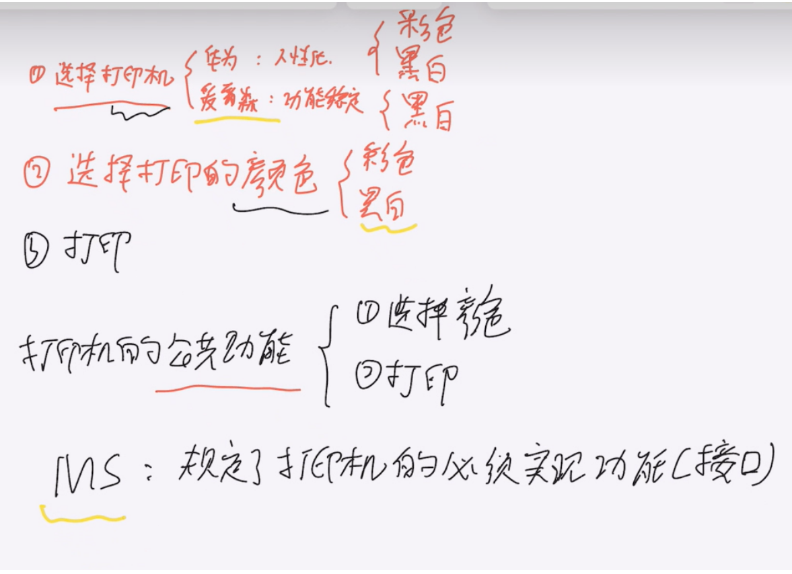
)举例
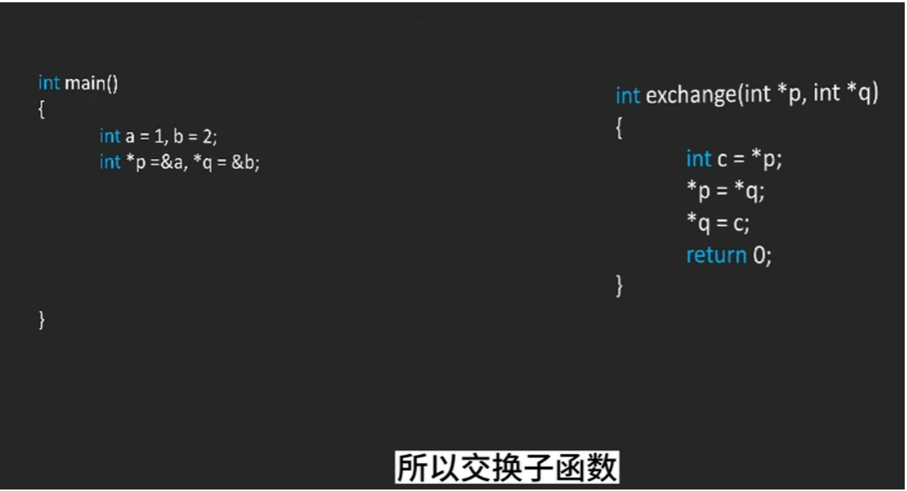
)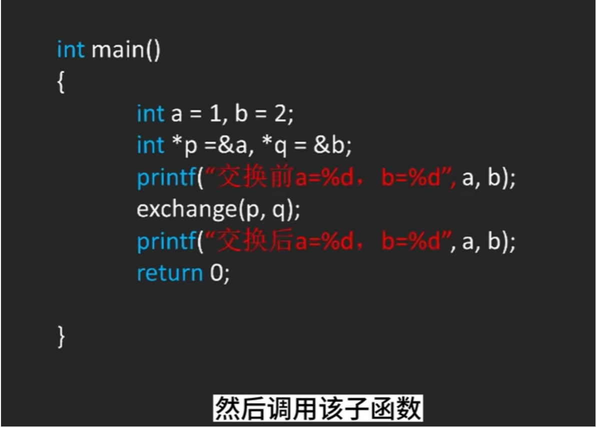
)传入子函数的参数是母体原参数的复制体
子函数对复制体进行操作是影响不到母体的
如果要对母体进行操作，用指针直接对地址直接进行操作
函数指针是指向函数的指针变量
回调函数是函数指针最常见的用途
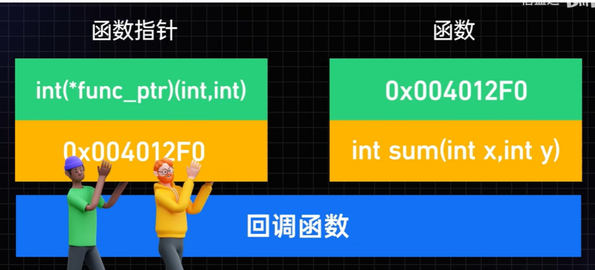
)函数指针的基本概念：
函数名可以被看做一个常量，保存了函数的内存地址（函数的内存地址存储了函数开始执行的位置）
通过使用指针来保存函数的地址，可以创建指向函数的指针
函数指针使得我们能够灵活的调用具有相同形式参数和返回值功能不同的函数，增加代码的灵活性
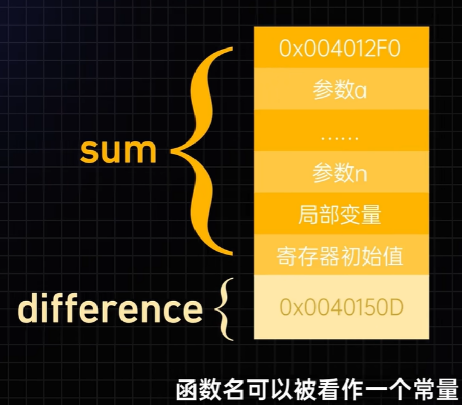
)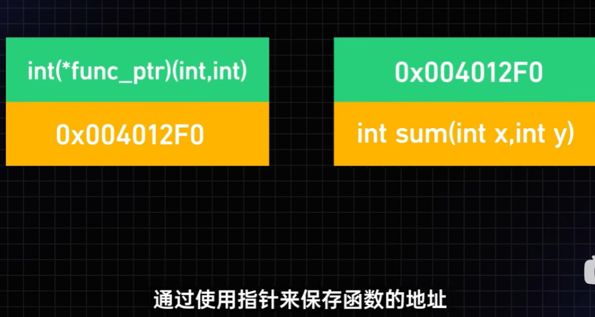
)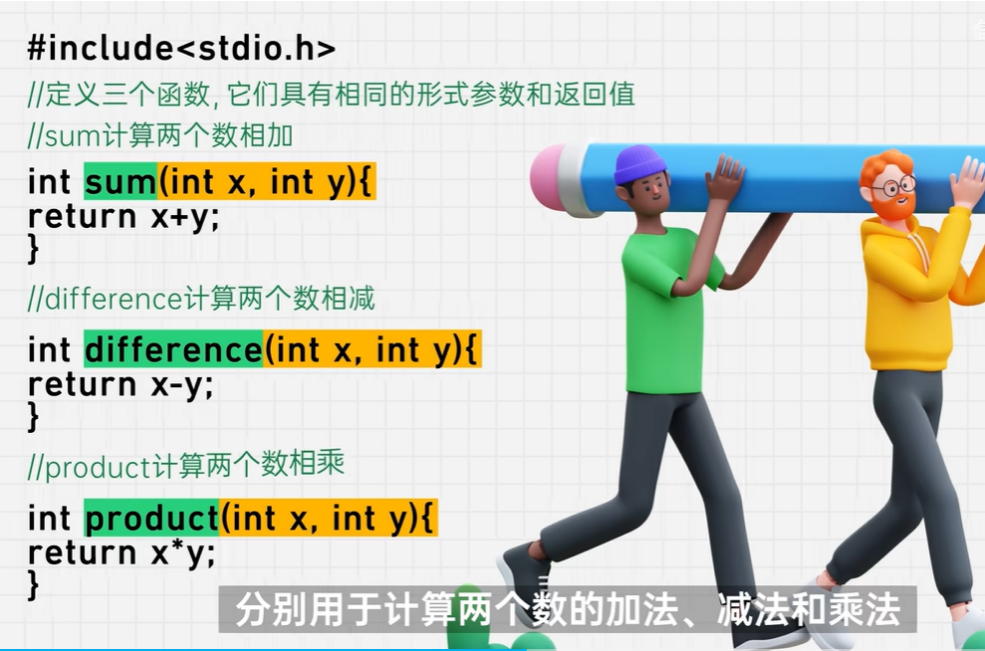
)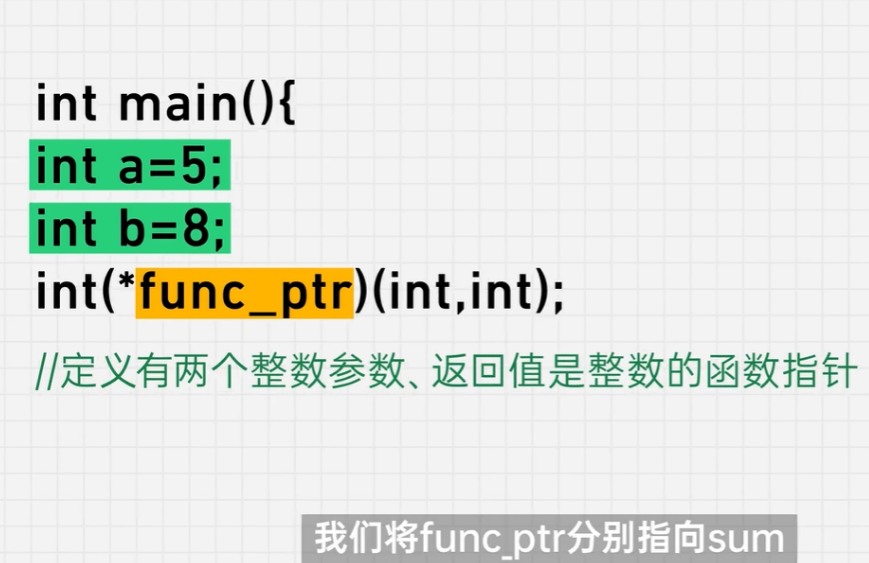
)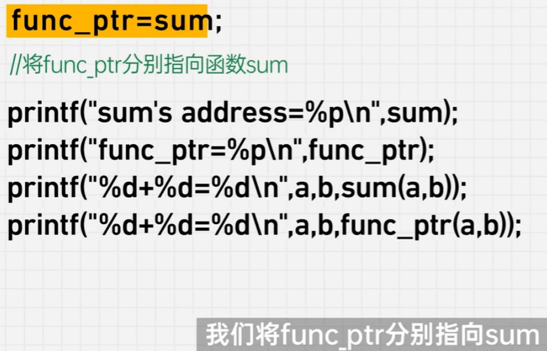
)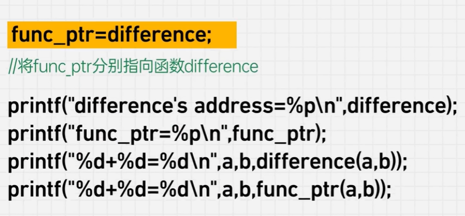
)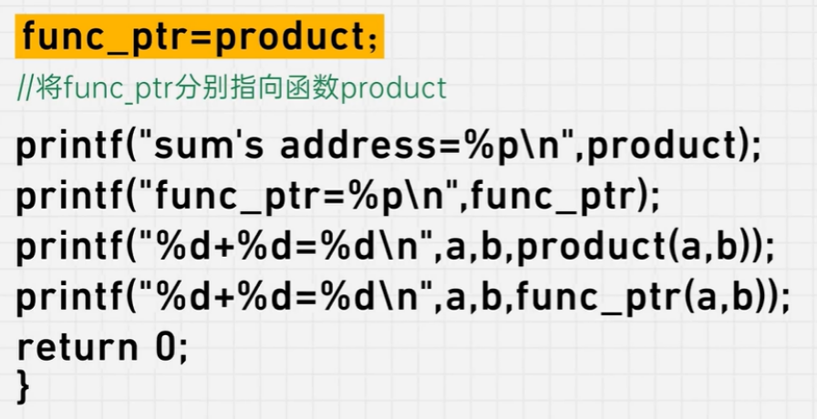
)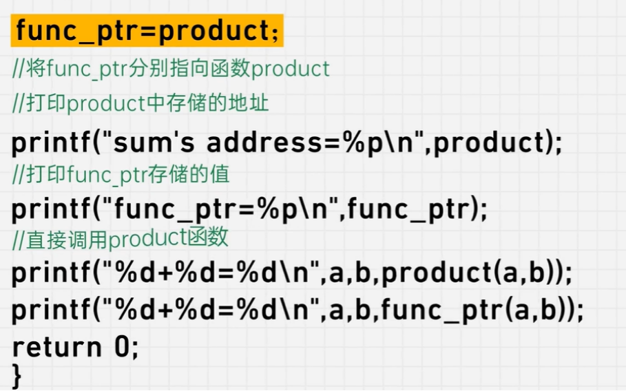
)函数指针也可以作为函数参数传递给其他函数
这样函数内部就可以根据函数指针所指向的不同函数来调用不同的功能
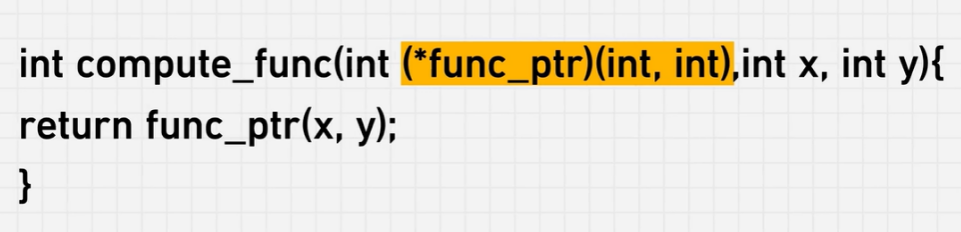
)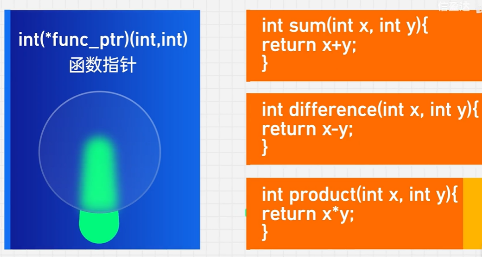
)面向对象的c编程—狗哥嵌入式
闲聊：高内聚低耦合
第一重：
内聚：把逻辑封装到模块里面
高内聚：自己的事情自己做（模块之外的都叫别人）
低耦合：各人自扫门前雪，莫管他人瓦上霜（莫管！！！）
按钮按下去之后，那概怎么办呢？
放在回调里面去做，不管
至于回调里面做什么，不管。
用户，用这个模块的人，他想要干什么，用回调函数去实现
或者触发事件，需要到应用层里面去实现
第二重：
高内聚：做好自己，宽容他人（软件要有容错性：当你的输入产生一些错误的时候，要把他包容掉，剔除掉）
（比如这个接口要允许他输入一个空指针，输入出错兼容掉）
低耦合：不管索取，只求奉献（一个模块不能提供所需要的功能，需要提供更多的功能以产生柔性）
第三重：
高内聚：运筹帷幄之中
（我只需要做好这个事情就可以了，我只要产生了想让其他的模块执行某功能的时候，九八这个信号把这个事件发出去，至于说人家接收不接受，不管。但是一旦对方接收，就算成功了，就产生了低耦合决胜千里之外的意思）
（button是一个对象，状态机是一个对象，对象与对象之间就不会产生任何调用关系，耦合就更小了，小到中间只有一个无形的消息在传播（一个小变量））
（每个对象之间仅仅只靠消息通信 ）
低耦合：决胜千里之外